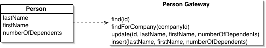
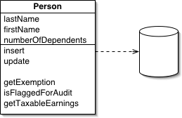
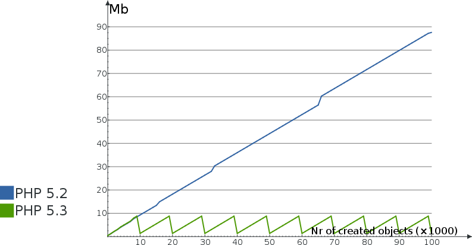
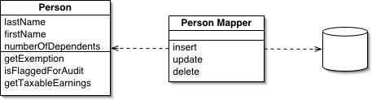
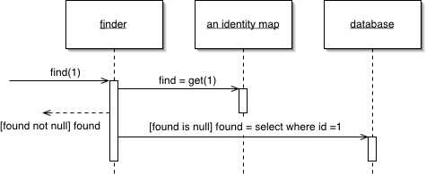
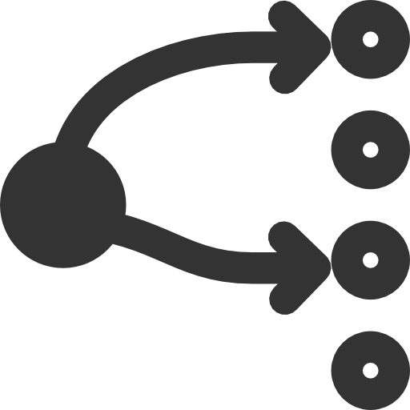

Doctrine,
Object Persistence,
and You
Jeremy Mikola
jmikola


Table Data Gateway
Row Data Gateway

Active Record
An Elephant Never Forgets
Data Mapper
Architecture
- EventManager
- Metadata
- Hydrator
- Persister
- UnitOfWork
- ObjectManager
- Repository
- Query
Hydrator
Persister
Unit of Work: Identity Map
Doctrine\Common\Persistence\ObjectManager
find($class, $id)persist($object)remove($object)flush()
clear($class = null)detach($object)merge($object)refresh($object)
Event Notification

Doctrine\Common\EventManager
dispatchEvent($event, $args = null)getListeners($event = null)hasListeners($event = null)addEventListener($event, $listener)removeEventListener($event, $listener)addEventSubscriber($subscriber)removeEventSubscriber($subscriber)
Doctrine\Common\Persistence\ObjectRepository
find($id)findAll()findBy($criteria, …)findOneBy($criteria)getClassName()
Packages
- Cache
- Annotations
- Lexer
- Collections
- Inflector
- Common
- DBAL
- MongoDB
- CouchDB
- ORM
- MongoDB ODM
- CouchDB ODM
- PHPCR ODM